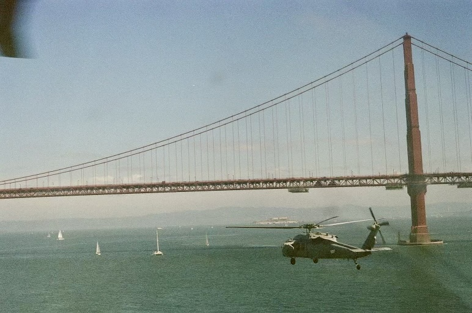

Dillon Cooley
I am a Lieutenant in the United States Navy and an MH-60S pilot currently serving as a weapons and tactics instructor (WTI) and fleet experimentation officer at HSC Weapons School Pacific. A 2018 graduate of the United States Naval Academy with a degree in aerospace engineering, I recently completed a master's program in air and space operations and tactics from the University of Staffordshire. In my current role, I specialize in maritime intelligence, surveillance, and reconnaissance (ISR) and airborne mine countermeasures (AMCM), focusing on the integration of emerging tactics and technologies into current operations.
My professional interests include international geopolitics and the evolving landscape of military strategy. I am particularly driven by how emerging technologies shape modern conflict. My recent research focuses on the feasibility of expeditionary advanced base operations (EABO) within the Indo-Pacific, exploring how distributed ISR can be leveraged to counter complex anti-access/area denial (A2/AD) environments.
Outside of the cockpit, I spend most of my time leaning into the outdoors. I enjoy distance running, snowboarding, and exploring San Diego.
Academic Research
Countering A2/AD Through EABO: The Role and Feasibility of Distributed ISR in the Indo-Pacific
Digital Footprint
Resume

